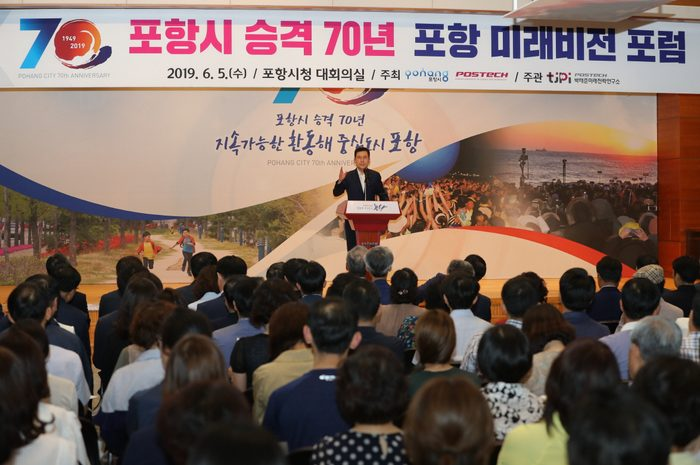

매체 경북일보보도일 2019-06-06
미래 100년의 도약…'포항 미래비전 포럼' 개최
5일 포항시청 대회의실에서 이강덕 포항시장을 비롯해 김도연 포스텍 총장, 박명재 국회의원, 서재원 포항시의회 의장, 공원식 70인 시민위원회 공동위원장, 조병기 포항청년회의소장, 이점식 포항테크노파크 원장과 시민 등 300여명이 참여한 가운데 ‘포항 미래비전 포럼’이 열렸다.
시 승격 70년을 맞아 앞으로 포항은 포스텍을 비롯한 지역의 인적자본의 지역내 활용과 지역 잠재력이 경제적인 물적 자본으로 유입될 수 있는 도시환경이 착실히 조성돼야 지속적 성장가능한 포항이 될 것이라는 주장이 제기됐다.5일 포항시청 대회의실에서 이강덕 포항시장을 비롯해 김도연 포스텍 총장, 박명재 국회의원, 서재원 포항시의회 의장, 공원식 70인 시민위원회 공동위원장, 조병기 포항청년회의소장, 이점식 포항테크노파크 원장과 시민 등 300여명이 참여한 가운데 ‘포항 미래비전 포럼’이 열렸다.이날 권도엽 전 국토해양부 장관은 기조강연에서 “지속적 성장과 발전하는 사회는 관용과 다양성, 교육, 개방성이 중요한 요소로 작용할 것”이라며, “포항은 포스텍을 비롯한 우수한 교육기관과 포스코를 만든 혁신적 개척정신이 깃든 도시인만큼 한국판 ‘실리콘 밸리’, ‘대한민국 대표교육의 도시’로의 잠재력이 풍부하다”며 포항의 앞으로 방향을 제시했다.이어, 백성기 전 포스텍 총장은 고 박태준 포스코 명예회장과 과거 70년 포항을 재조명하며, 일찍이 지식기반사회의 도래를 예측해 포스텍의 연구기반을 바탕으로 포스코의 미래 준비를 강조한 그의 혜안과 박태준 우향우 정신을 강조하고, 지역의 연구 성과가 지역의 기업, 기술력으로 자리매김해야 대학과 기업이 공존할 수 있음을 강조했다.신세돈 숙명여대 교수는 국가경쟁력 강화를 위해서는 경쟁력 있는 ‘클러스터’조성의 필요성과 해외 사례를 소개 한데 이어, 회사생산성 향상과 혁신주도, 새로운 사업 자극을 위해 국가적 지원정책이 중요하고, 인도 방가로드 하이테크 기업처럼 특정장소를 비즈니스의 특정영역으로 홍보가 필요하며 그 지역으로 포항의 발전 방안을 찾아보는 방식의 접근을 강조했다.이어, 박길성 고려대 교수는 ‘포항, 21세기형 대학도시를 상상하다’는 주제로 “현재 진형중인 ‘유니버+시티’의 포항 모델 구축과 리더십, 보다 전문화된 실무조직과 협의체 구성, 중앙정부와 지방정부의 외적 자원 동원이 필요하다”고 말했다.주제발표에 이어 김승환 포스텍 박태준미래전략연구소장을 좌장으로 심재윤 포스텍 산학처장, 이재영 한동대 산학협력단장, 하대성 한국은행 포항본부장, 김종식 포항시 환동해미래전략본부장 등이 토론자로 나서 ‘시승격 70년! 포항의 미래 발전을 향한 새로운 도약’이라는 주제로 지역의 역량결집과 지역 경제활성화 방안 등도 함께 공유하는 자리를 가졌다.이날 이강덕 포항시장은 환영사를 통해 “이번 포럼은 시승격 70년을 맞아 민·관·학이 머리를 맞대고 70년을 터닝 포인트로 ‘지속가능한 환동해중심도시’로의 실행력이 제고할 수 있는 다양한 정책방향과 미래비전의 정립은 물론, 미래포항의 보다 구체적 모습이 현실로 그려질 것”이라고 말했다.한편, 이번 ‘포항 미래비전 포럼’은 과거 70년 포항의 재조명으로 지역의 정체성을 확립하고 미래의 혁신성장동력 발굴과 비전 제시를 위해 포항시와 포스텍이 공동 주최, 포스텍 박태준미래전략연구소가 주관했다.
출처 : 경북일보 - 굿데이 굿뉴스(
http://www.kyongbuk.co.kr)

